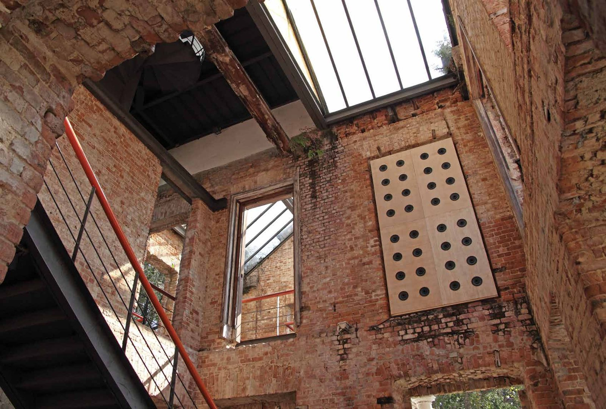
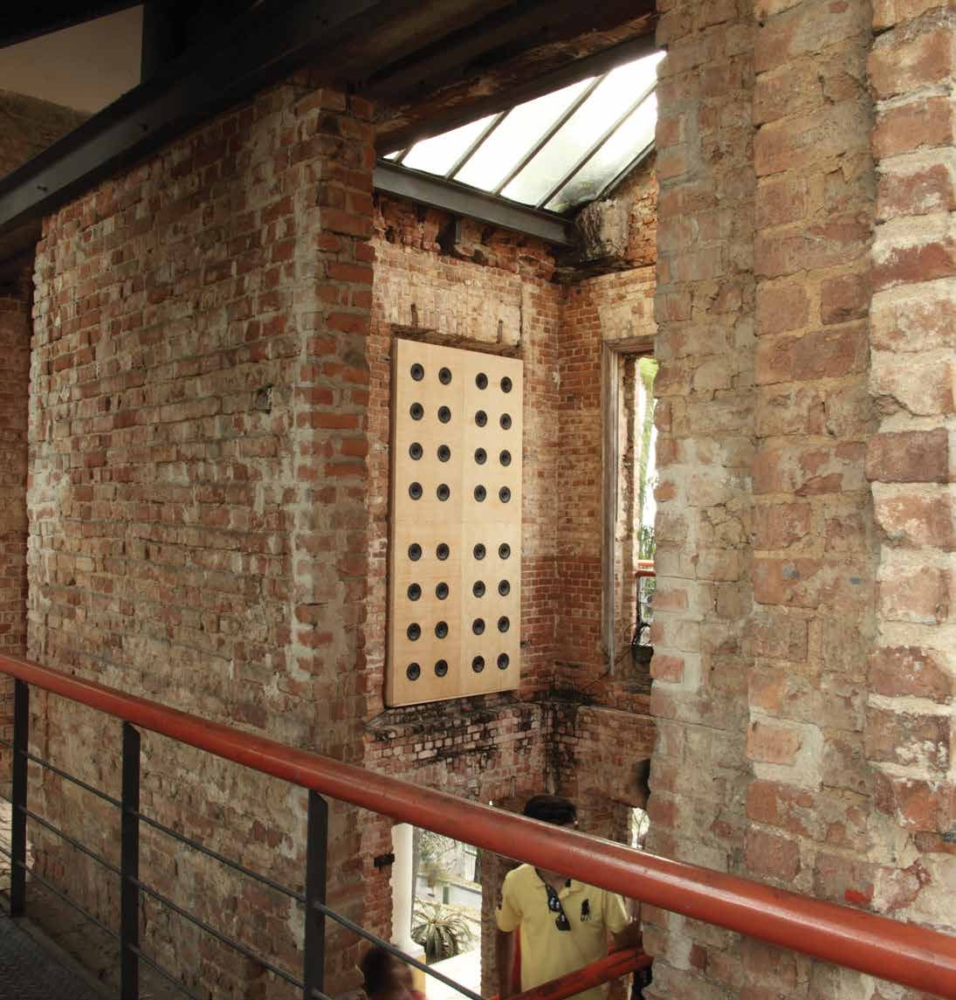
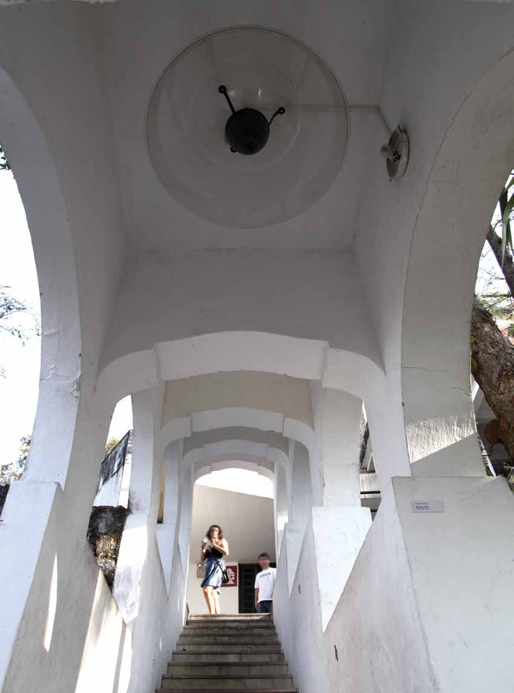

Muro de Som
Use fones de ouvido





No coração do casarão em ruínas, duas paredes com 32 alto-falantes incrustados emitem vento — um vento feito da expiração do próprio artista.
A escada diante da obra obriga o visitante a se deslocar, e é nesse deslocamento que o campo sonoro ganha volume e profundidade.
- Materiais
- Duas paredes com 32 alto-falantes cada, som de vento
- Dimensões
- 2 paredes de 330 × 170 cm
- Local
- Parque das Ruínas, Rio de Janeiro
- Exposição
- Muro de Som (2016)